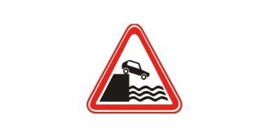
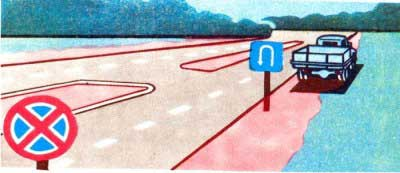
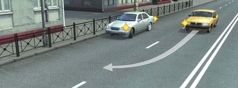
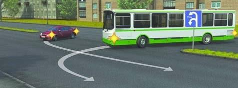
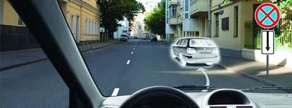
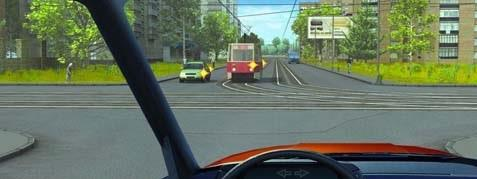
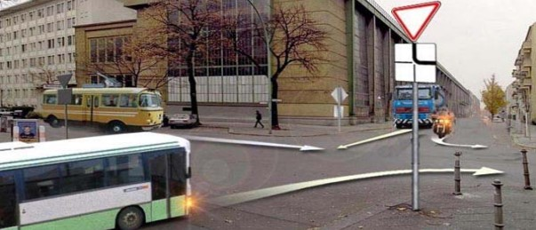
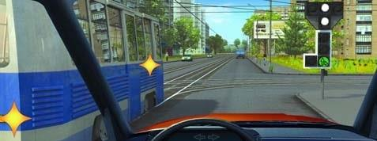
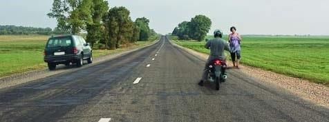

Թեստ 23
30:00
1. «Ճանապարհային երթևեկության անվտանգության ապահովման մասին» ՀՀ օրենքի համաձայն` տրանսպորտային միջոցի ձեռք բերման օրվանից ի՞նչ ժամկետում այն պետք է ներկայացվի հաշվառման` Ճանապարհային ոստիկանության մարմիններ:
2. ՙՃանապարհային երթևեկության անվտանգության ապահովման մասին՚ ՀՀ օրենքի համաձայն վարորդին են հավասարեցվում
3. Տրանսպորտային միջոցների շահագործումն արգելվում է, եթե`
4. Տրանսպորտային միջոցների շահագործումն արգելվում է, եթե`
5. Հետադարձն արգելվում է`
6. Այս ճանապարհային նշանը նախազգուշացնում է, որ առջևում`

7. Ի՞նչ առավելագույն հեռավորության վրա է տեղադրվում բարդ խաչմերուկում «խաչմերուկի տարածք» ճանապարհային նշանը, եթե այն հնարավոր չէ տեղադրել խաչմերուկի սահմանին։

8. Ազդու՞մ է արդյոք արգելող նշանը ճանապարհի այն հատվածի վրա, որտեղ կանգառ է կատարել վարորդը:

9. Ո՞ր վարորդը պետք է զիջի ճանապարհը

10. Ո՞ր տրանսպորտային միջոցի վարորդը պետք է զիջի ճանապարհը

11. Թույլատրվո՞ւմ է կայանումը նշված վայրում

12. Խաչմերուկն ուղիղ անցնելիս վարորդը

13. Տրանսպորտային միջոցները խաչմերուկը կանցնեն հետևյալ հերթականությամբ՝

14. Թույլատրվու՞մ է ավտոբուսների կանգառն ու կայանումը բնակավայրերում երթևեկելի մասի ձախ կողմում` միակողմ երթևեկության ճանապարհներին:
15. Ի՞նչ առավելագույն արագությամբ է թույլատրվում միջքաղաքային ավտոբուսների երթևեկությունն ավտոմայրուղիներով:
16. Այս խաչմերուկում վարորդը

17. Ո՞ր վարորդն է խախտել կանգառ կատարելու կանոնները
